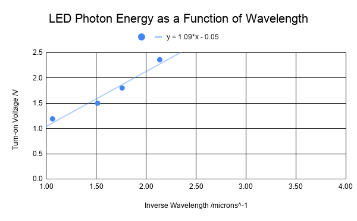
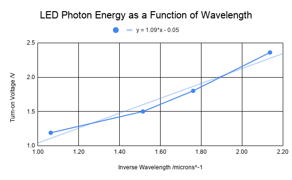
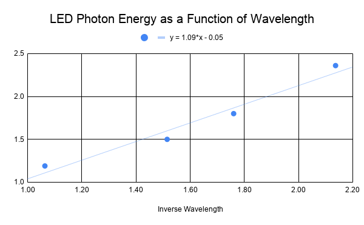
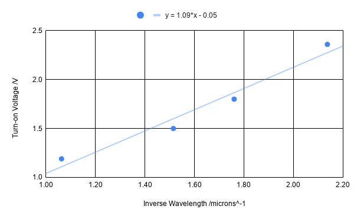
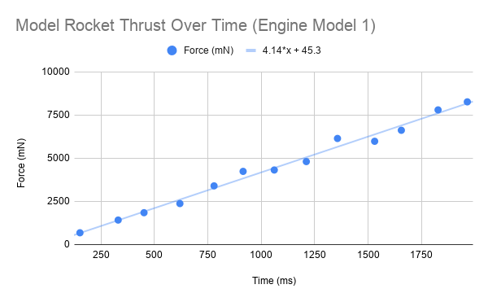
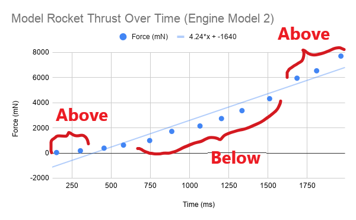
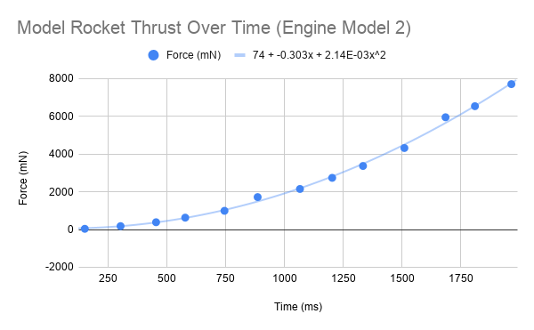
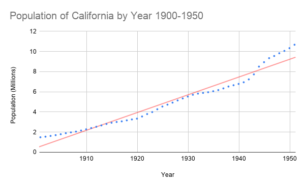
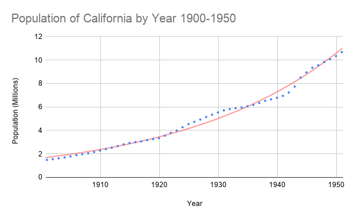
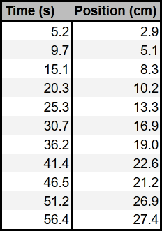

Good Table Example

Make sure to include all tables, plots, pictures, drawings, screenshots or anything else asked of you in the exercises in your report, as well as answers to all the questions.
All responses and answers should contain the correct number of sig figs and should include units when needed.
In this lab we will build on some of the concepts from the previous lab while adding some new skills. New topics we will discuss in the assignment are the following:
In the previous assignment you learned some basics about how to make a table for your lab report. Here we will write down the requirements for any table that you submit.
In order for the table to convey the data accurately, it must contain:
Figure 1 shows two example tables. In the table on the left, the two variables that were measured are clearly described, the headers have units, the values have the proper number of sig figs, and their decimal points are aligned.
In the table on the right the variables are not clearly described. Even if you could determine what the two columns represent, there is no way for you to know the units. Is it seconds and millimeters? Hours and nanometers? Years and feet?
Your goal with a table, is to communicate what you did as simply as possible to those reading your report. For this class, that means your TA who will be grading your report. If you are clear in your thoughts and your tables, it is more likely your TA will be able to understand any mistakes you make. This will allow them to provide better feedback, and maybe even take off less points. If your TA can't follow what you did, they are more likely to take off points.
Graphs help us visualize the relationship between two variables: the independent variable (on the x-axis) and the dependent variable (on the y-axis).
An independent variable is one that doesn't depend on anything else. Often times, but not exclusively, it is a variable that you are measuring directly.
A dependent variable is one that does depend on the other variables. Often times, but not exclusively, this is a variable that you get from doing calculations.
Often times in the lab manual we will ask you to plot "this vs. that." When asked to plot something with that format that means plot "dependent variable vs independent variable".
When it comes to a title, don't provide a title like "Distance vs Time." This is a bad title. This information can be determined from just looking at the axes. Your title should describe what is happening, e.g. "Distance Traveled by Car on Vacation Trip."
Below is an example of a good plot, which shows the relationship between a few different color (wavelength) LEDs and the measured voltage at which they turn on. The Inverse Wavelength is the independent variable and the Turn-on Voltage is the dependent variable.

Notice that the data takes up the entire plot. There are no large blank areas. Both of the axes are labeled and have units. The data points are not connected and there is a line of best fit. There is also a title for the plot that lets us know what the experimenter was doing.
Exercise 1
In this exercise you will use the 6 rules above to identify mistakes in graphs that other students have made.
Question 1
Identify mistakes with the following graph.

Question 2
Identify mistakes with the following graph.

Question 3
Identify mistakes with the following graph.

Question 4
Identify mistakes with the following graph.

Question 5
Identify mistakes with the following graph.

Every time your graph contains these mistakes in this or subsequent labs you will be deducted points.
Curve fitting gives you the relationship between the two variables, highlighting the strongest trend in the data. It is determined by the entire data set, which makes it more accurate than only using a single data point. Thus, it reduces experimental errors.
Choosing which curve to use (line, parabola, exponential, etc.) for your data can take some practice. Your choice may depend on a few factors.
For most of the Physics 6*L you will be doing linear fits to data, but there will be occasions where we need something non-linear. For that reason, we will provide examples mainly of linear fits, but keep in mind that these guidelines apply to any curve fit.
For this example we will consider a student, Jillian, who is investigating different types of engines in her model rocket. She wants to evaluate the thrust of the different engines as a function of time.
DO NOT REMOVE AN OUTLIER without a good reason.
On her first run she sees an outlier in her data set. She takes a closer look at her measurement system and realizes there is a loose cable which causes intermittent failures. She decides this run was not valid, and does the experiment again.


When Jillian takes data for her second engine, plots and does a linear fit this is her plot.

Notice how the the data starts above the fit, then goes below the fit, then back above the fit. Jillian recognizes that this means her data is not linear because the data she be randomly above and below the fit as in Figure 9.
She reads the manufacturer data sheet for the second engine and learns the thrust should increase quadratically in time. So she decides to fit a parabola to the data. This is her new plot.

Notice how the curve follows the data more closely and how the data is randomly distributed around the curve. This is sign of using the correct function to fit your data.
Exercise 2
Below are two plots of the population of California from 1900 to 1950. The data is the same in both of the plots but each has a different fit. The first one is a linear fit and the second is an exponential fit.

Linear

Exponential
Question 6
Which function fits the data better - linear or exponential? Explain your reasoning.
Just like all physical quantities, a trend or slope estimated from data is subject to the limits of significant figures for reporting purposes. In the case of the line of best fit, which may be calculated from tens --- if not hundreds --- of data points, the number of significant figures isn't directly inherited from the number of sig figs present in your data. This is something that must be estimated from the entire set of data you are working with.
We have to be clear about what a sig fig is so we know how many digits to keep! When we talk about a sig fig, we are actually talking about a measure of uncertainty. For example, if I measure and record the velocity of 1.2 m/s, I am saying that the actual value of that velocity is greater than 1.15 m/s and less than 1.25 m/s --- otherwise, that the true velocity lies in this interval of numbers that round to 1.2 m/s; hence, the "2" is the smallest significant digit.
The same principle applies for lines of best fit: we need to determine the smallest digit that is not sensitive to the random nature of a real set of data, which will never fall exactly on your trend line. While the math and concepts that are needed to fully understand this procedure are often employed in upper-division labs with error analysis components, we can use spreadsheets to help us determine the error. By using the function "LINEST", a spreadsheet will provide us with the values for the slope and intercept as well as the error in those values. The error will tell us the correct number of sig figs needed. We will demonstrate how to use this below.
To use this to determine your least significant digit, you would then truncate the value of at the digit that coincides with the first non-zero tens place of the uncertainty. For example, if you obtained and an uncertainty of , you would report in your notebook and report . This is very similar to using the "STDEV" function that we used last lab.
When determining the number of sig figs to report in our slope or intercept we will rely on the standard error reported by the LINEST function.
If we are doing more complicated curve fits than just lines we require more knowledge about programming or higher level math. That is above what is needed in this class. For all of the physics 6*L classes, we will just use the following convention:
The number of sig figs in a non-linear curve fit will be limited by the number of sig figs in your data.
As an example, if we collected data on the amount of potential energy in a spring has as a function of its displacement from equilibrium, we might get data like the following:
| Length (m) | Potential Energy (J) |
|---|---|
| 0.021 | 0.012 |
| 0.043 | 0.212 |
| 0.065 | 0.372 |
| 0.085 | 0.740 |
| 0.107 | 1.061 |
| 0.129 | 1.850 |
| 0.150 | 2.310 |
| 0.169 | 2.756 |
| 0.191 | 3.764 |
| 0.209 | 4.121 |
| 0.228 | 4.752 |
| 0.249 | 6.250 |
| 0.267 | 7.563 |

Since we expect the result to be quadratic, i.e. takes the form , that is the fitting function we have used. The results are displayed above the graph as with , , and . If we were to report , , or , or do any calculations with them we need to use the correct sig figs.
To determine the correct sig figs we look to our data table. Since the lowest number of sig figs in either the length or the force is 2, we will only treat , , or as having two sig figs. Thus, , , and .
Again, this is not a standard way of treating the data, but a convention that we are taking on for this class.
Now that we have talked about what makes a good table, plot, and curve fit we will show you how to do this for yourself. Spreadsheets will make your life MUCH easier. We highly recommend that you take the time to learn how to use them. It will be a useful skill for all of your Physics 6*L lab courses and you may even find it useful in the real world.
We will walk through plotting and fit the data in Figure 1. We will assume you can make a table from doing the first lab. This data is recorded by a car traveling from San Diego to San Francisco. The driver marked the distance traveled in kilometers roughly every 60 minutes. Once the car got on the freeway, the driver put on cruise control and never stopped (what amazing mileage!).
We want to answer the question, what speed, in mph, did the driver set their cruise control.
We know that for an object traveling at a constant velocity, , starting at position , that its position, , as a function of time, , is given by the following linear equation:
Our plan here is to convert the data table into units of miles and hours so that we can answer the question in the correct units, then to fit a line to our data where the slope should be the velocity.
The driver took data in units that we would like to convert. We do that in a spreadsheet program by using equations and functions. Watch the video below for instructions on how to use sheets to help with conversions.
Now that we have made our table, let's plot our data and do a fit. We will have to use the LINEST function in sheets to give us the error and number of sig figs in our measurement. Watch the video below demonstrating all of this.
Use all of the tools we have discussed in this lab to analyze the speed of an inch worm.
Exercise 3
Here is a table that a student collected by monitoring an inch worm as it traveled around a table. The student measured the position of the inch worm at a given time. Here is the data.

Question 7
Using the similar analysis for the car above, what is the speed of the inch worm inches per minute?
Make sure you answer with the correct number of sig figs and show the uncertainty in your measurement.
Make sure to include your final table with all the columns you made, a sample calculation for one row of your table, and the graph in your report.
Exercise 4
Write a brief conclusion summarizing the important points of this lab.